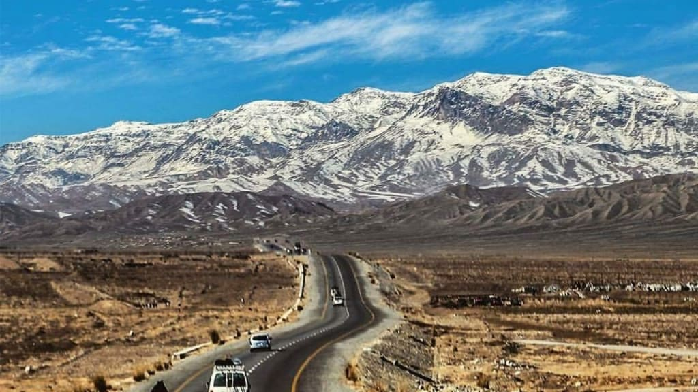
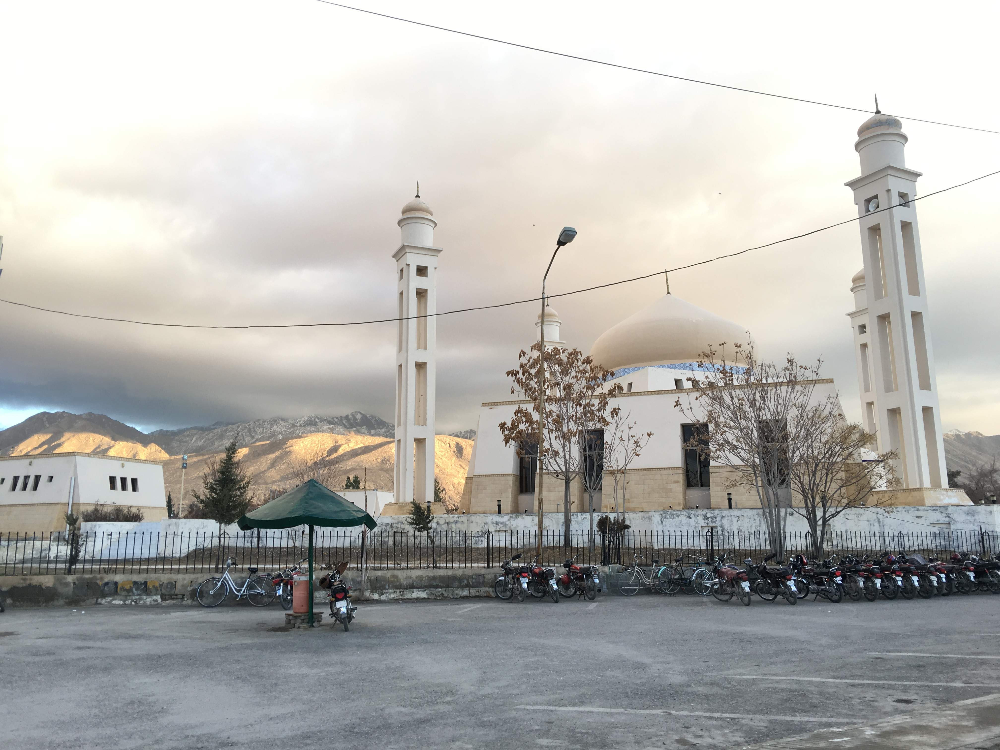
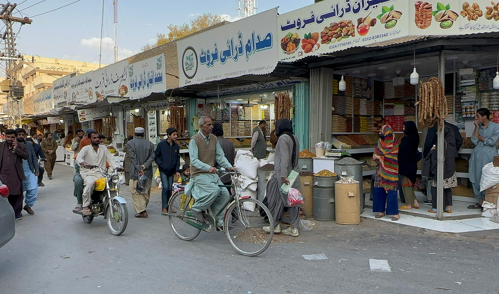
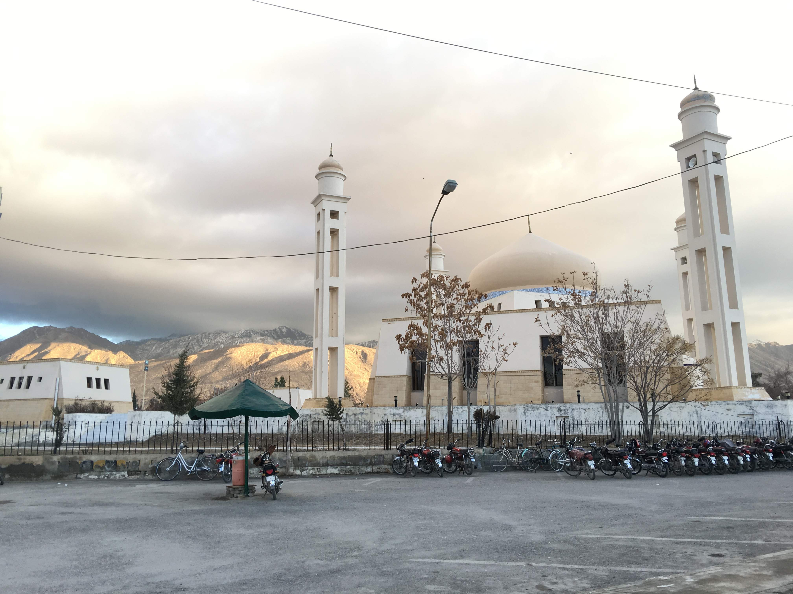
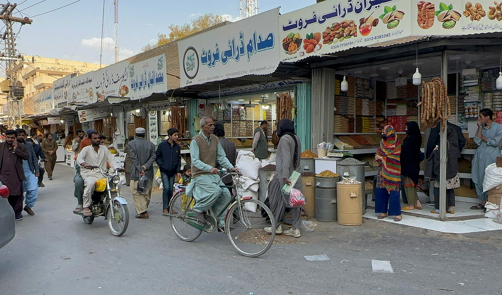
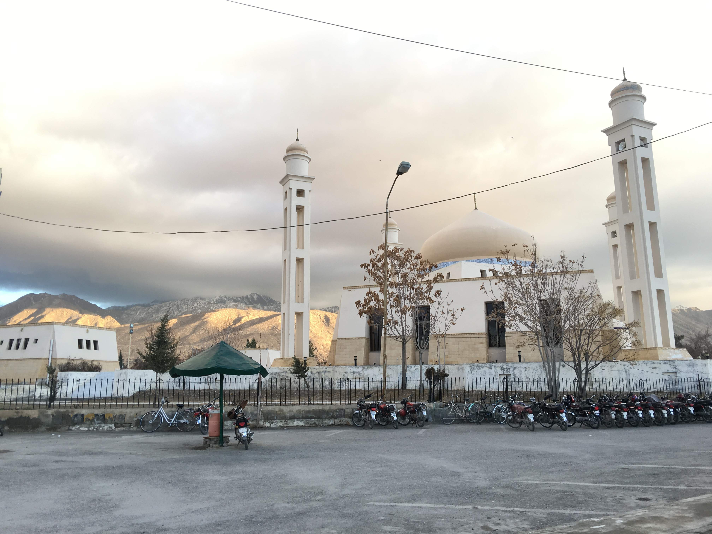
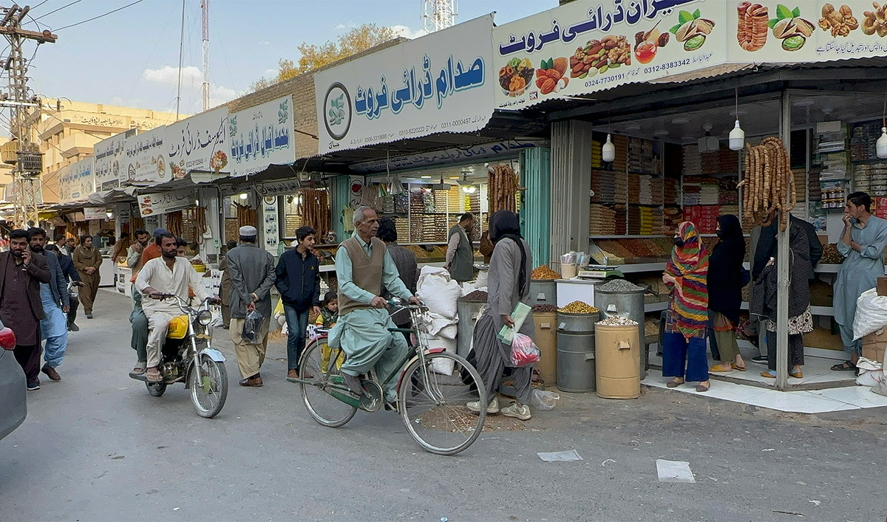
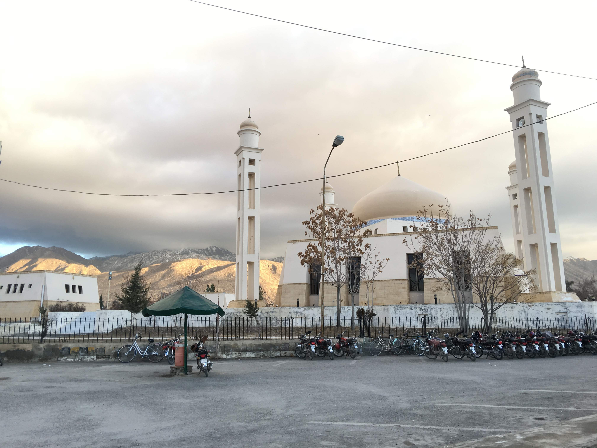
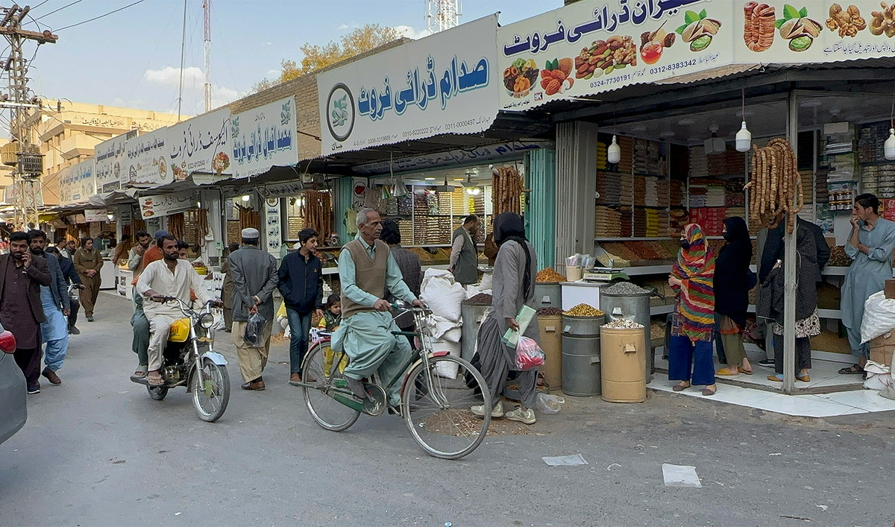

Photo Gallery

 





The Heart of Balochistan — Where Culture Meets Nature
Quetta is the capital city of Balochistan and one of the most historically and culturally rich cities of Pakistan. Surrounded by mountains, Quetta is known for its pleasant climate, scenic beauty, and strong cultural identity.
Quetta is located in the north-west of Pakistan near the Afghan border. Its strategic location has made it an important trade and cultural center.
The city experiences cold winters and mild summers. Snowfall in nearby areas makes Quetta one of the coldest cities in Pakistan.
Quetta is famous for its hospitality, traditional Balochi and Pashtun culture, local food, dry fruits, and fruit markets.
From Hanna Lake to Ziarat Valley, Quetta offers breathtaking landscapes, peaceful valleys, and historic landmarks.
A scenic lake surrounded by hills — perfect for picnics and boat rides.
Famous for juniper forests and calm environment.
Historic fort with a view of the city and surrounding mountains.

